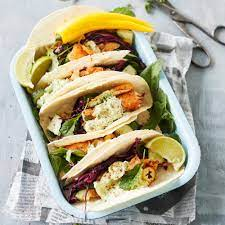

Ahventaco

Tähän reseptiin tarvitset:
- Ahvenia
- Tomaattia
- Punasipulia
- Limeä
- Chiliä
- Korianteria
- Fetaa
- Ranskankermaa
- Punakaalia
- Sokeria
- Panko- tai korppujauhoja
- Öljyä paistamiseen
- Valmista pico de callo. Silppua sipuli, tomaatit, korianteri ja chili. Sekoita keskenään ja lisää limen mehu.
- Pilko punakaali pieneksi ja lisää sen joukkoon limeä ja sokeria oman maun mukaan. Anna tekeytyä jääkaapissa.
- Leivitä ja paista ahvenet.
- Kokoa tacosi ja laita menemään ääntä kohti.
etusivulle